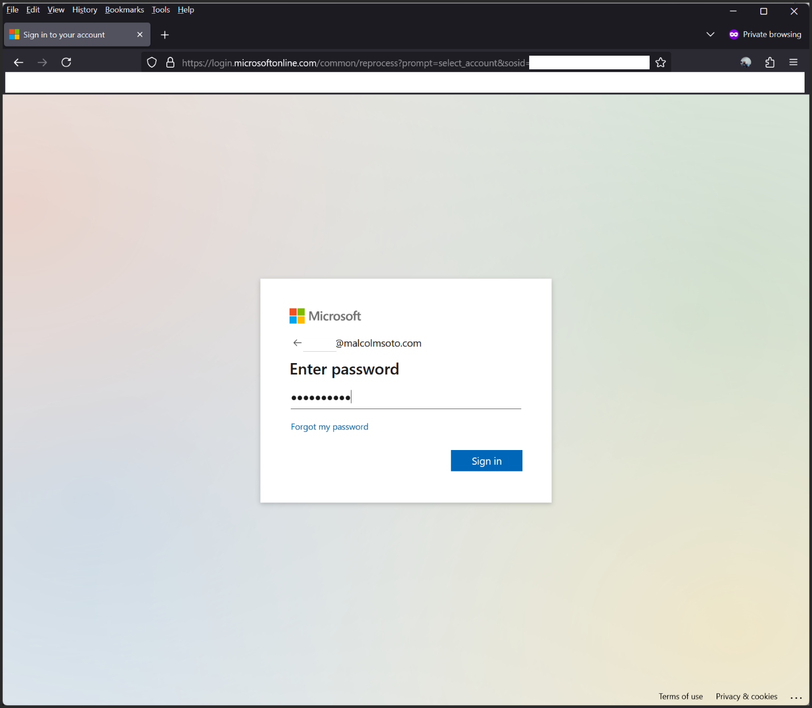
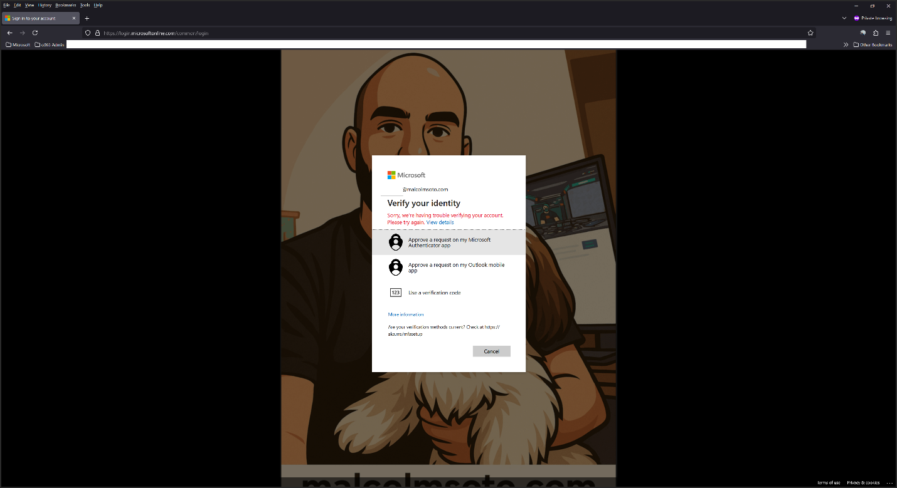
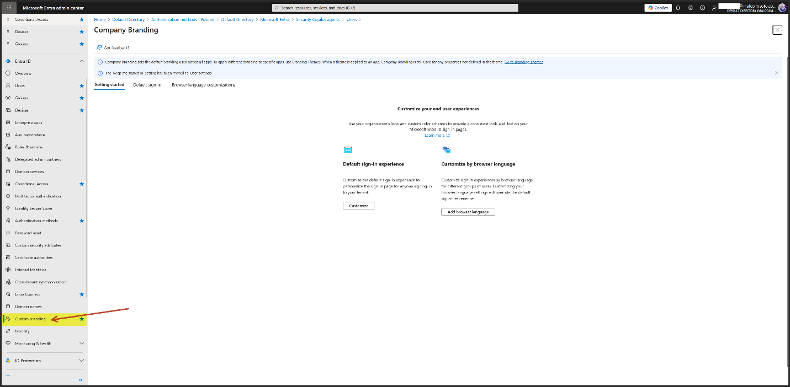
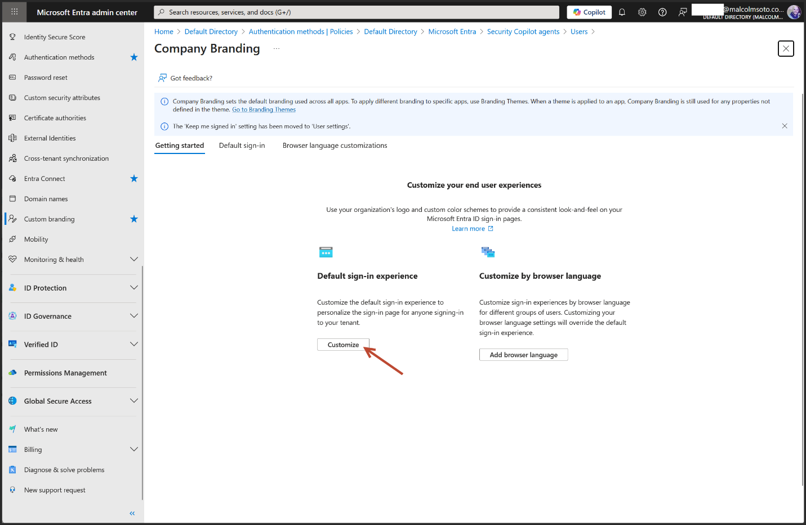
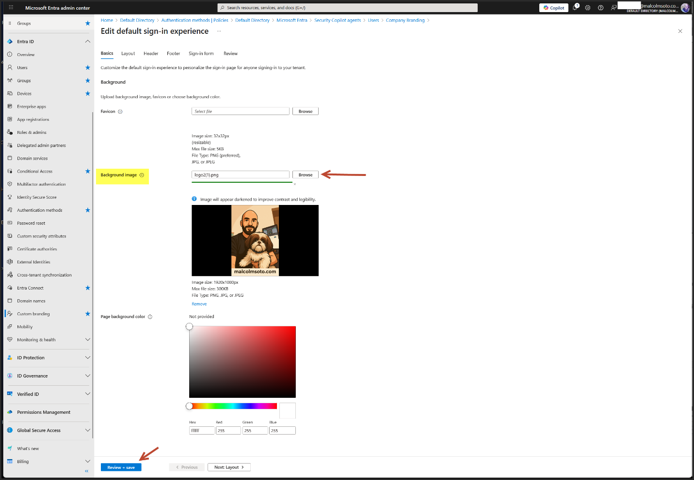
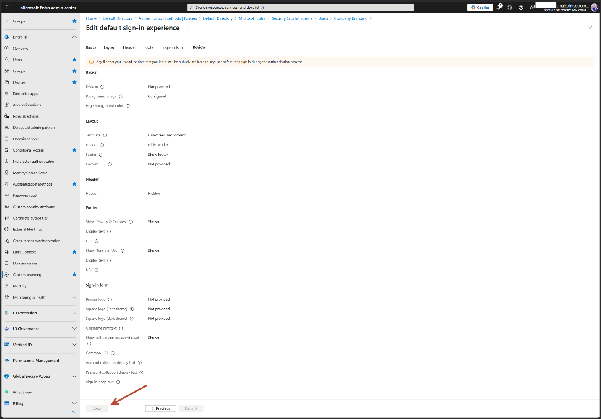

Entra Custom Branding
Branding your Microsoft Entra ID sign-in experience isn’t just about aesthetics—it’s a strategic move that strengthens user trust, security posture, and phishing resistance.
Here's why it's smart:
Security Benefits of Custom Branding
- Reduces Phishing Risk: Attackers often mimic Microsoft’s default login pages to trick users into entering credentials. A custom-branded sign-in page makes it easier for users to spot fakes—because they’re trained to expect your logo, colors, and layout.
- Boosts User Confidence: When users see familiar branding (like your logo or even a Shih Tzu watermark), they feel reassured that they’re logging into a legitimate system. That trust reduces hesitation and improves adoption.
- Supports Security Awareness Training: You can use branding as part of your internal security messaging. For example, include a footer like: “If this page doesn’t look like this, don’t sign in—report it.”
Go from this:

To this:

Step-by-Step Setup
Sign in to entra.microsoft.com using a Global Admin account.
Navigate to: Identity → User experiences → Company branding

Click Customize under the default sign-in experience.

Upload Your Branding Assets
- Favicon: A tiny icon that appears in the browser tab—like your brand’s digital fingerprint. Helps users instantly recognize your site.
- Background Image: The large image behind the sign-in box. Sets the visual tone—can be sleek, scenic, or even include a subtle mascot watermark.
-
Logos (Header, Banner, Square):
- Header Logo: Appears at the top of the sign-in box. Best for horizontal logos.
- Banner Logo: Used in some layouts—similar to header but with more space.
- Square Logo: Shows up in places like consent prompts and mobile views. Good for icons or mascots.
- Set Background Color: A fallback color if the image doesn’t load. Also used in minimal layouts. Choose something that complements your logo.
-
Choose Layout (Full-screen or Partial):
- Full-screen: Background image fills the entire screen—great for immersive branding.
- Partial: Sign-in box sits beside a smaller image—more compact and cleaner.
- Optional: Add Header/Footer Text: Custom messages like “Welcome to Malcolm Soto’s workspace” or security reminders like “If this page looks different, don’t sign in.”
For my case: I selected Background Image.

